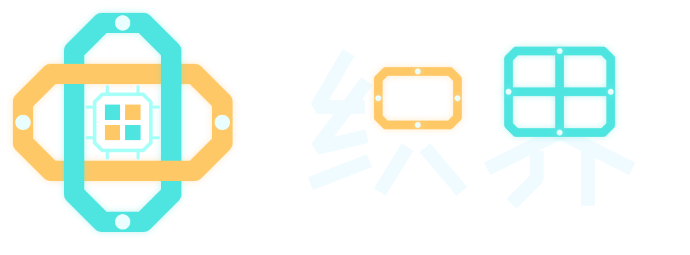

了解应用怎么使用。
先了解应用的打开、关闭和更新方式，熟悉常用操作。

给小设备准备的一套应用系统
Loom OS 让 Mosaico 这样的小设备，
也能像手机一样，点图标打开小工具。
从阅读文字、调整设置开始。
读一页文字，调一下设置。
从身边用得上的小工具开始。
01 / 看看能做什么
选一个应用，看看内容，调整设置。
让小设备上的操作更容易找到。
02 / 用起来是什么样
它负责管理应用的打开、关闭和更新，
也让应用能保存内容、使用设备支持的功能。
从你点下图标，到内容出现在屏幕上。
网页阅读器可显示自带的文字。联网读取、传感器和智能功能是否可用，请查看使用说明和设备支持情况。
03 / 使用指南
先了解应用的打开、关闭和更新方式，熟悉常用操作。
准备一台 Mosaico，核对设备要求，并备份已有内容。
传感器、联网和智能功能是否可用，请以使用说明和设备支持情况为准。
如果你会写代码，可以用 Lua 编写应用，用 LVGL 显示界面。下面的命令可以把项目代码下载到电脑。
git clone https://github.com/zalsay/loom-os.git
应用代码对应 main.lua；应用信息对应 manifest.json，用来填写应用信息和需要的权限。
查看制作说明 ↗